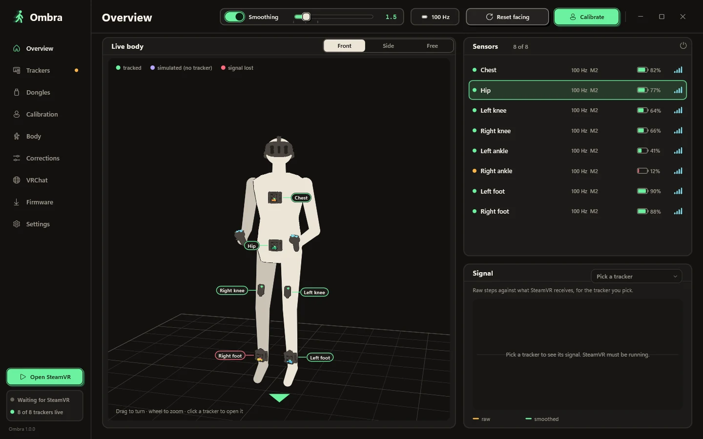
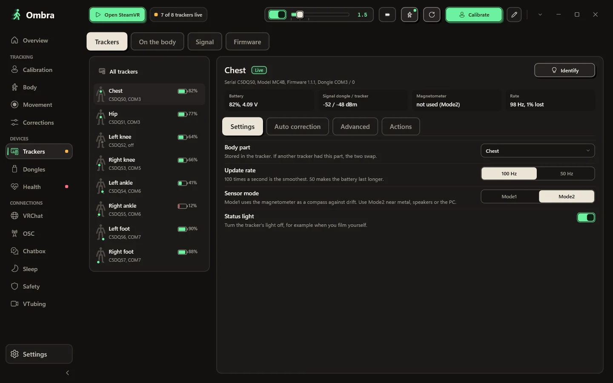
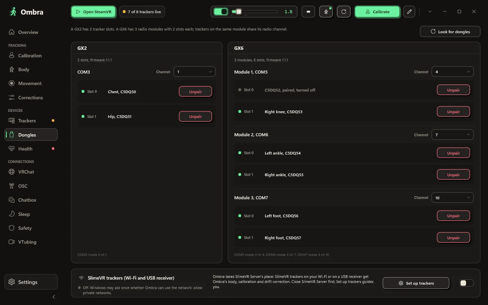
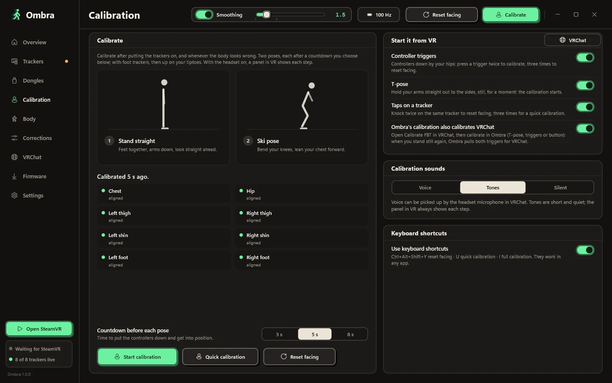
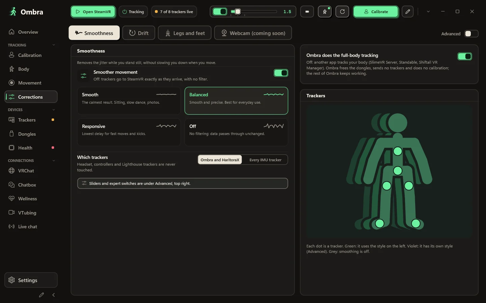
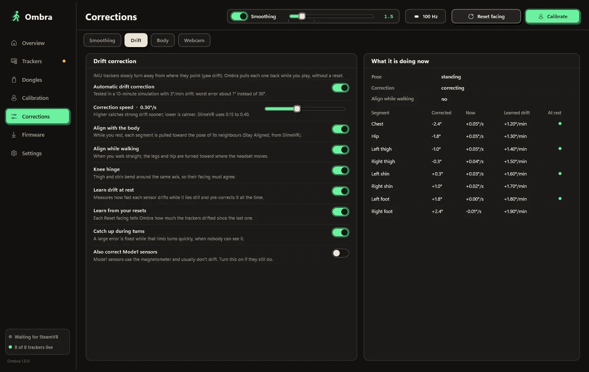
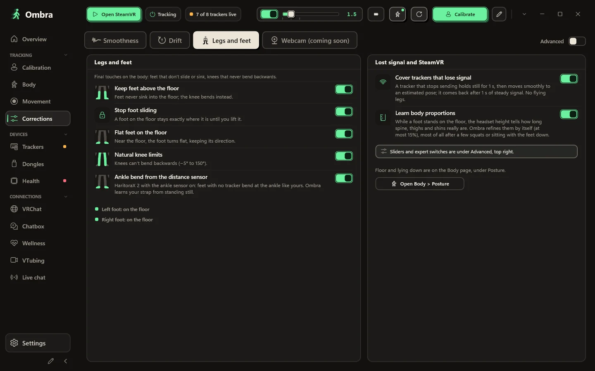
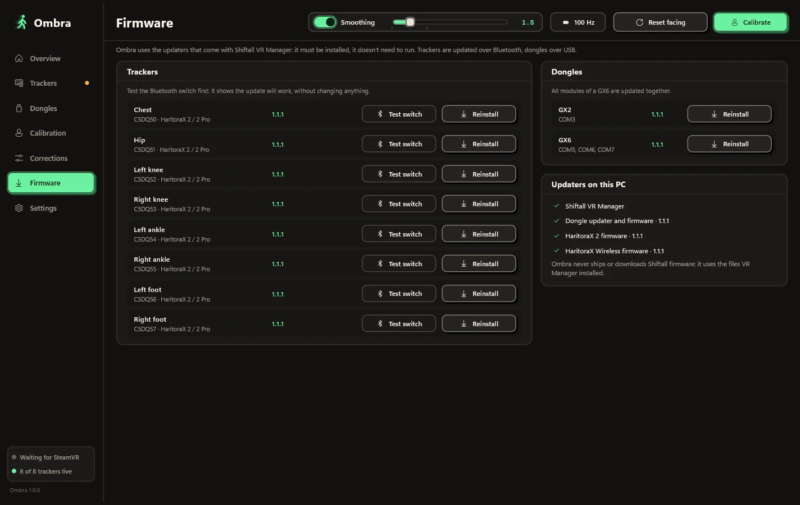

No VR Manager needed
Ombra talks to GX2 and GX6 dongles directly over USB serial, at about 100 Hz per sensor. Pairing and unpairing work inside the app.
HaritoraX · SlimeVR-compatible · any IMU tracker in SteamVR
Ombra reads your trackers straight from their dongles or receivers, builds your body from the sensors and your headset, and hands SteamVR every pose with its velocity, so each frame lands where you actually are.

Features
Ombra replaces the whole chain. It talks to the dongles, models your body, filters every tracker and feeds SteamVR, in one small native app.
Ombra talks to GX2 and GX6 dongles directly over USB serial, at about 100 Hz per sensor. Pairing and unpairing work inside the app.
A One Euro filter that is steady when you stand still and fast when you kick. Four presets, a fine slider, and a separate style for each tracker.
Every pose carries filtered linear and angular velocity, plus latency compensation for the radio link, so SteamVR predicts it to the exact frame time, like a Vive tracker.
Stand straight, then a ski pose. Ombra works out how each sensor is mounted on your limb, so a tracker strapped at an angle still points the right way.
IMU trackers slowly turn away from where they point. Ombra pulls each one back while you play, learns each sensor's drift at rest, and needs no reset.
Battery and voltage, signal strength on both ends, magnetometer quality, sensor mode and the real update rate, for every tracker, live.
Press a trigger twice, hold a T-pose, or double-tap any tracker to reset facing. A panel in VR shows each step, with voice or tones.
Written in Rust with a Direct2D window: no browser engine, no scripting runtime. SteamVR starts it for you, and it waits in the tray.
Tour
These are real screenshots of Ombra running in its built-in demo mode, with eight simulated trackers on one GX2 and one GX6.
The Overview shows the body Ombra builds from your sensors and headset, in front, side or free 3D view. Each tracker is colour-coded: tracked, estimated, or signal lost.
Pick a tracker to see its serial, firmware, dongle slot, battery voltage, signal on both ends, magnetometer state and real update rate.

A GX2 has two slots. A GX6 has three radio modules with two slots each. Ombra shows every module, the tracker in each slot, and the channel it uses.

Stand straight, then bend into a ski pose. About six seconds in total, and Ombra reports each body segment as it aligns.

Choose Smooth, Balanced, Responsive or Off, or set the level on a slider. Give a single tracker its own style, for example calmer feet.

Automatic yaw-drift correction, with a live table of what it is doing: the correction on each segment, the current rate, and the drift it has learned.

Corrections on the final body keep it believable: feet stay above the floor, planted feet don't slide, and knees never bend backwards.

Update trackers over Bluetooth and dongles over USB, by Ombra itself, with Shiftall's original firmware files, unmodified.

Smoothing, live
A fixed filter makes you choose between jitter and lag. Ombra's adaptive filter raises its cutoff with speed, so it does both. This chart runs the same filter and the same presets as the app, on a simulated foot tracker at 100 Hz.
How it works
Two parts work together: the Ombra app, which owns the dongles and the body model, and a small SteamVR driver, which creates the virtual trackers.
Standing: gravity gives each sensor's "up", and the headset gives "forward".
Ski pose: the axis each segment bends around reveals how the sensor is mounted on the limb.
Bones are chained down from the headset (forward kinematics), with segment lengths from your height. When a sensor drops out, Ombra holds its last pose for a second, then blends smoothly into an estimated pose until the signal is steady again.
Without elbow trackers, the elbows are estimated from how you hold the controllers; the headset keeps the torso from drifting.
The driver creates the virtual trackers with their SteamVR roles already set. It can also apply the same filter to other IMU trackers already in SteamVR, if you turn that on.
Lighthouse devices, headsets and controllers are never modified.
Install
Get Ombra-Setup.exe from the latest GitHub release.
Quit Shiftall VR Manager and SteamVR. Only one app can use the dongles at a time.
It needs no admin rights and registers the SteamVR driver for you.
Turn on your trackers, start SteamVR, put them on and press Calibrate.
Windows 10 or 11, 64-bit. SteamVR. HaritoraX 2, 2 Pro or Wireless with a GX dongle, or SlimeVR-compatible trackers.
FAQ
No. Ombra reads the dongles itself, pairs trackers and updates firmware with Shiftall's original files. Just keep VR Manager closed while Ombra runs: only one app can use the dongles at a time.
HaritoraX 2, 2 Pro and Wireless through GX2 or GX6 dongles; SlimeVR-compatible trackers over Wi-Fi or a USB receiver (for example Butterfly and Smol Slime). Ombra's filter and prediction can also smooth any other IMU tracker already in SteamVR. Ombra sends SteamVR the hip, chest, knees, feet and elbows, and you choose which of them each game sees. HaritoraX 1 (wired) is not supported.
No. Only one app can open the dongles at a time. Close VR Manager before starting SteamVR. SteamVR then starts Ombra on its own.
No. Lighthouse devices, headsets and controllers are never modified. The driver only creates Ombra's virtual trackers and, only if you turn it on, smooths other IMU trackers.
Yes. Ombra can reset facing automatically when VRChat runs its full-body calibration, and it can confirm VRChat's one-handed calibration for you over OSC.
Yes. Run Ombra.exe --demo for eight simulated trackers on a GX2 and a GX6. The demo never touches COM ports, Bluetooth, SteamVR or your settings.
No. Ombra is an independent project. It is free to download and use; the source code is not published. You can propose features and extensions on GitHub.